Funkcjonalności realizowane przez aplikację, która opiera się na bazie danych Szpital:
- Rejestracja i logowanie pacjenta
- Dodawanie nowych pracowników przez administratora systemu
- Umówienie się pacjenta na wizytę do specjalisty
- Wyświetlenie danych pacjenta (na jego koncie) m.in informacji dotyczących wizyt, chorób, historii hospitalizacji, skierowań i recept
- Tworzenie recept, diagnoz i skierowań przez lekarzy
- Wyświetlanie statystyk, informacji o chorobach
- Ustalanie grafików sal/wizyt przez administratora
Diagram przypadków użycia systemu szpitala:
.png)
Diagram ERD bazy danych:
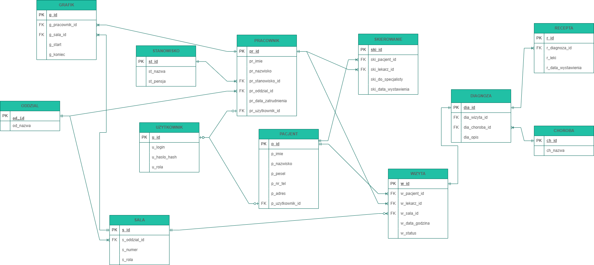
Encje
Rdzeniem bazy jest tabela WIZYTA, ponieważ celem szpitala jest przyjmowanie pacjentów na wizyty w celu weryfikacji ich zdrowia. Encja ta jest powiązana z encjami PACJENT, PRACOWNIK i SALA a także tylko dzięki zrealizowanej wizycie jest możliwe stawianie diagnoz i wystawienie recept przez lekarzy.
ODDZIAL
zawiera nazwy wszystkich oddziałów szpitala
STANOWISKO
tabela przechowująca informacje o nazwach stanowisk w szpitalu i pensjach, które odpowiadają danemu stanowisku
CHOROBA
Zawiera nazwy chorób
SALA
posiada informacje o pomieszczeniach w szpitalu: numer sali, jej rola oraz do jakiego oddziału jest przypisana
UZYTKOWNIK
encja przechowuje dane do logowania użytkowników systemu: administratorów, lekarzy i pacjentów. Zawiera unikalny numer użytkownika, login, hash hasła oraz rolę przypisaną użytkownikowi.
PRACOWNIK
przechowuje informacje o pracownikach szpitala: numer identyfikacyjny pracownika, imię, nazwisko, obejmowane stanowisko, oddział, do którego pracownik jest przypisany, datę zatrudnienia, numer użytkownika systemu (jeśli stanowisko pracownika to administrator lub lekarz)
PACJENT
encja przechowująca dane pacjentów: numer identyfikacyjny pacjenta, imię, nazwisko, numer PESEL, numer telefonu, adres, numer użytkownika systemu
WIZYTA
tabela zawierająca informacje o umówionych wizytach: numer pacjenta, który umówił wizytę, numer lekarza przypisanego do wizyty, numer sali (jeśli wizyta nie jest konsultacją zdalną), datę i godzinę wizyty oraz jej status
GRAFIK
encja, która odpowiada za przypisywanie godzin pracy pracownikom w poszczególne dni. Zawiera atrybuty: numer identyfikacyjny pracownika, identyfikator sali, data i godzina rozpoczęcia pracy, data i godzina zakończenia pracy pracownika
SKIEROWANIE
przechowuje dane z wystawionych przez lekarzy skierowań: dane pacjenta, który otrzymał skierowanie, lekarza, który wydał skierowanie oraz informacje do jakiego specjalisty pacjent powinien się udać, a także datę wystawienia skierowania
DIAGNOZA
umieszczane są w niej dane o diagnozach pacjentów, zawiera informacje o nazwie choroby, wizycie, na której postawiono diagnozę oraz opis diagnozy.
RECEPTA
przechowuje recepty, które zostały wystawione przez lekarzy. Jest powiązana z diagnozą i zawiera informacje o lekach, które pacjent powinien wykupić oraz posiada datę wystawienia.
Opis relacji w bazie danych
Relacje 1:N (Jeden do wielu):
- Pracownik (Lekarz) może przeprowadzić wiele wizyt, ale jedna wizyta jest prowadzona przez jednego Lekarza.
- Pacjent może odbyć wiele Wizyt, ale konkretna Wizyta dotyczy tylko jednego pacjenta.
- Wizyta może skutkować wydaniem kilku diagnoz (np. gdy pacjent ma choroby współistniejące).
Relacje 1:1 (Jeden do jednego):
- Użytkownik systemu jest powiązany z konkretnym pracownikiem lub pacjentem.
Oddzielenie tabeliUZYTKOWNIKod danych osobowych ułatwia zarządzanie autoryzacją.
Aspekty, których projekt nie obejmuje
- Modułu księgowego i finansowego (rozliczenia z NFZ, fakturowanie).
- Modułu magazynowego apteki szpitalnej (śledzenia dokładnych stanów magazynowych leków).
- Zintegrowanego systemu laboratoryjnego (szczegółowych wyników badań krwi, obrazowych itp.).
Słowniki danych
Tabela ODDZIAL
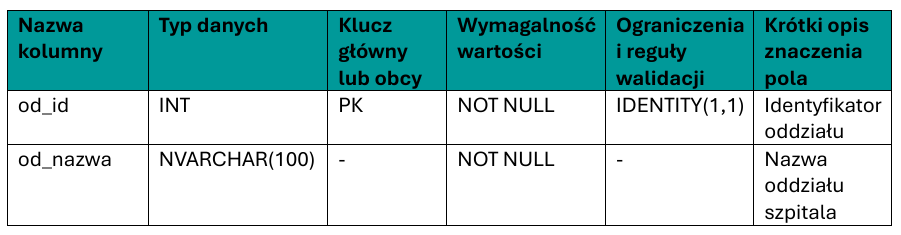
Tabela STANOWISKO
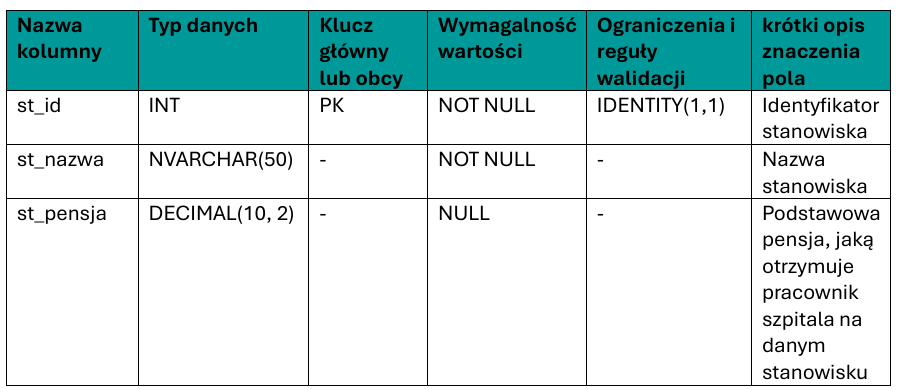
Tabela CHOROBA
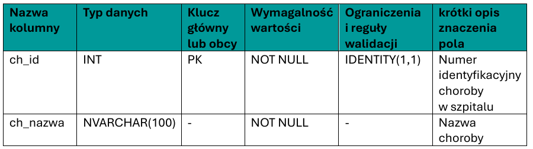
Tabela SALA
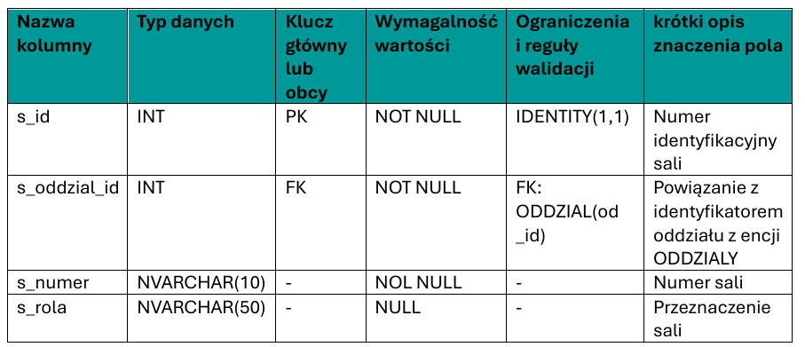
Tabela UZYTKOWNIK
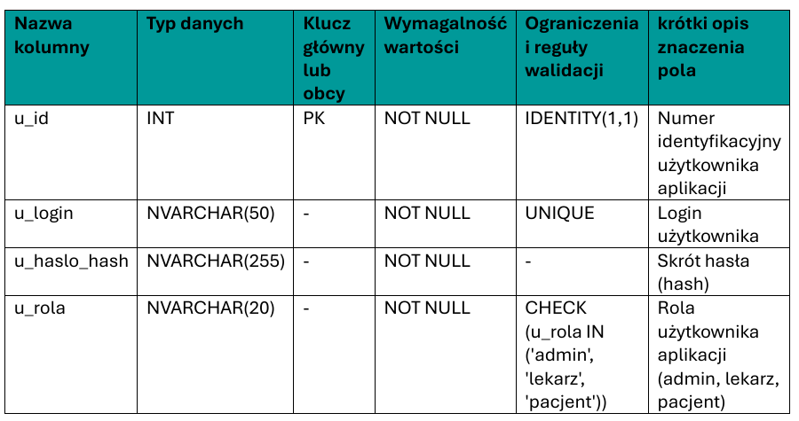
Tabela PRACOWNIK
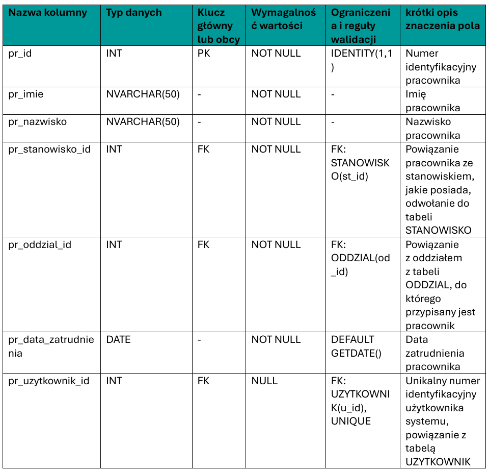
Tabela PACJENT
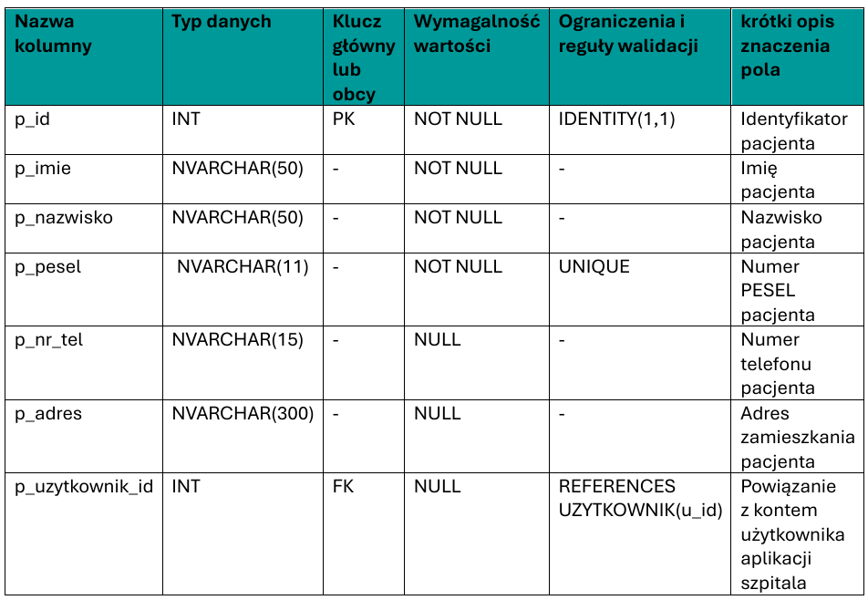
Tavela WIZYTA
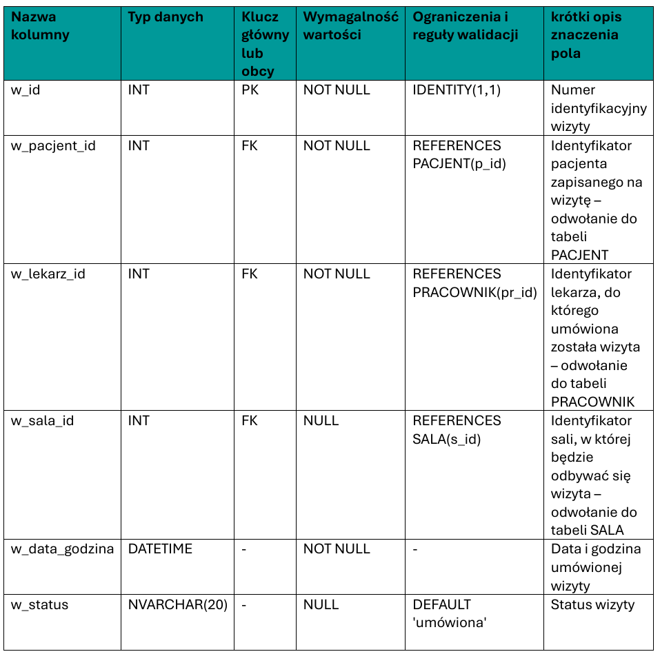
Tabela GRAFIK
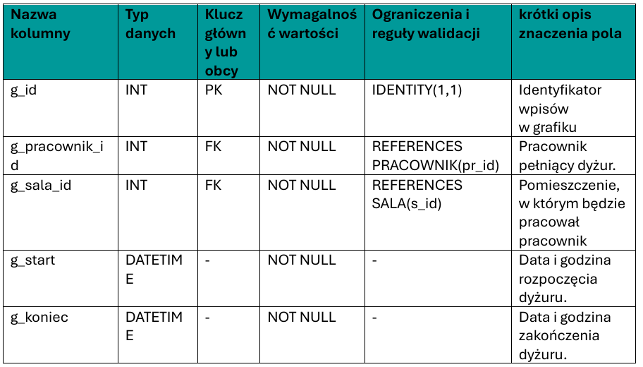
Tabela SKIEROWANIE
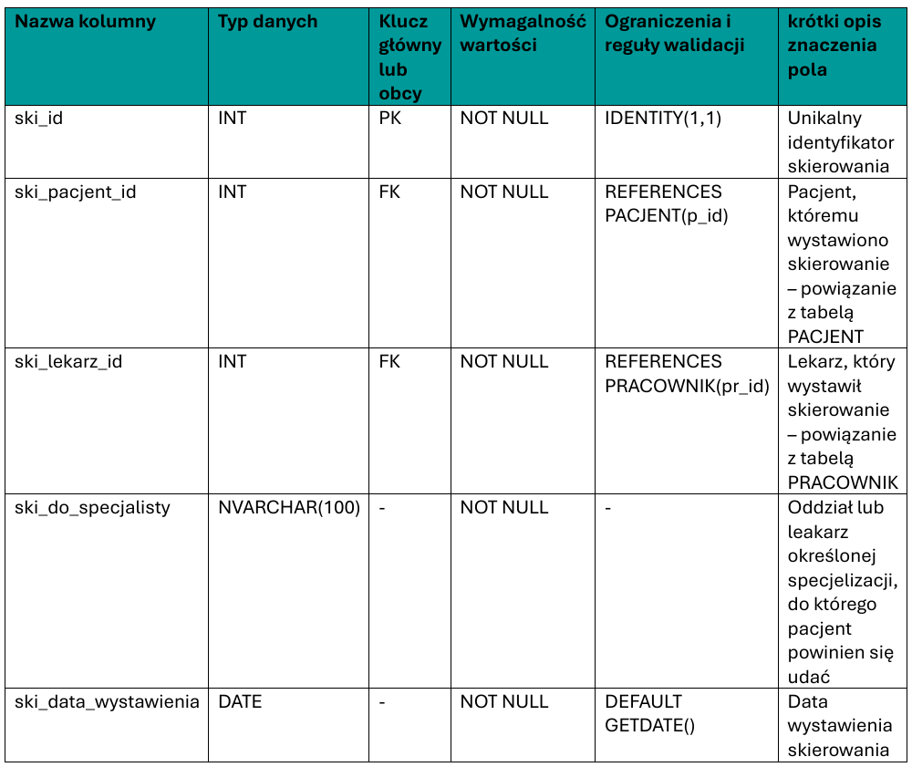
Tabela DIAGNOZA
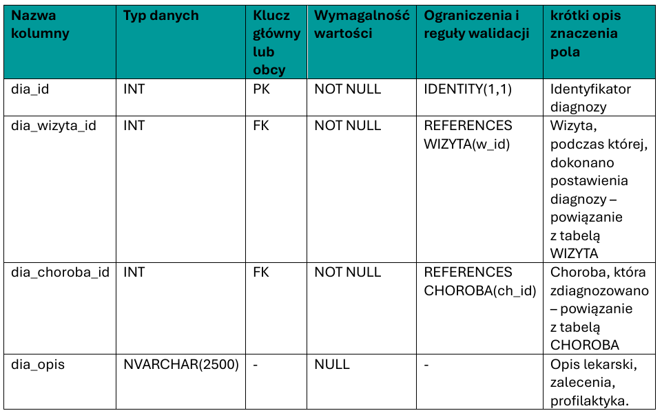
Tabela RECEPTA
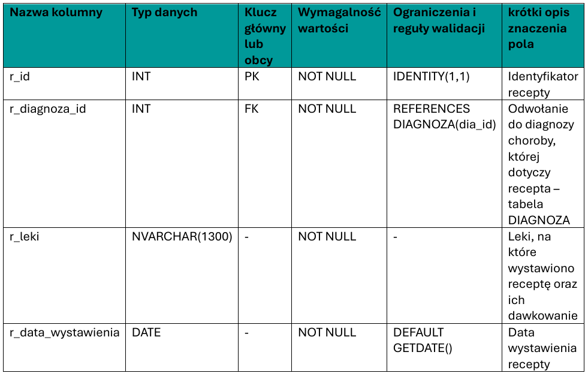
Uzasadnienie najważniejszych decyzji projektowych
- 1. Autogenerowanie kluczy (
IDENTITY):
Do wszystkich kluczy głównych użyto autoincrementacji (IDENTITY(1,1)). Uniezależnia to bazę od logiki aplikacji i eliminuje ryzyko duplikatów przy zbiegach operacjiINSERT. - 2. Tabele audytowe i logi:
Zamiast nadpisywać i tracić historię edycji, zaprojektowano osobne tabele logów (np.WIZYTY_LOGI,PensjaAudit). Obsługiwane są one przez Triggery bazodanowe (wyzwalacze). Pozwala to śledzić zmiany wrażliwych danych medycznych. - 3. Standaryzacja danych (Słowniki):
Takie dane jak nazwy stanowisk, nazwy oddziałów czy schorzenia wyniesiono do osobnych tabel słownikowych. Zapobiega to literówkom i niespójnościom. - 4. Więzy integralności i defaults:
Użyto constraintów typuUNIQUEnp. dla numeru PESEL oraz wartości domyślnych (DEFAULT GETDATE()dla dat), co zapewnia podstawową walidację.
Model architektury systemu
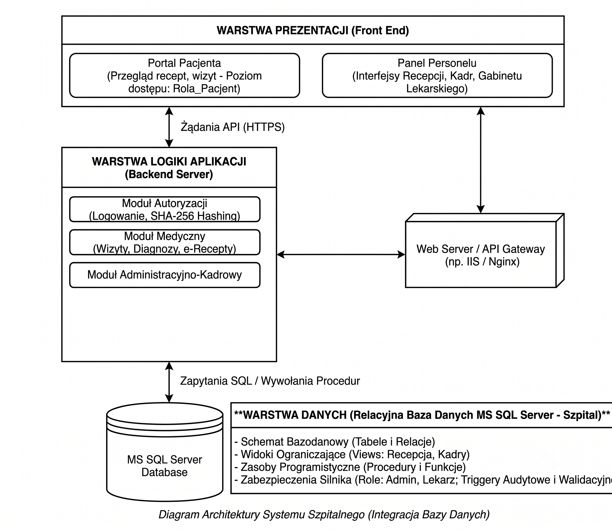
Implementacja
Skrypt tworzący strukturę tabel w bazie danych Szpital został wykonany w SQL Server Management Studio.
Plik: tworzenie_tabel.sql
Wstawianie danych do tabel
Plik: dodanie_rekordow.sql
Wstawianie rekordów zostało podzielone na cztery etapy:
- 1. Tabele słownikowe (
ODDZIAL,STANOWISKO,CHOROBA,SALA):
Dane zostały dodane za pomocą składniINSERT INTO. - 2. Tabele
PRACOWNIKiPACJENT:
Na początku zostały utworzone pomocnicze funkcje tablicowe (fn_ListaImion(),fn_ListaNazwisk(),fn_ListaImionZ(),fn_ListaNazwiskZ()) przechowujące odpowiednio po 50: imion męskich, nazwisk męskich, imion żeńskich, nazwisk żeńskich. Następnie za pomocą procedurGenerujPracownikow,GenerujPacjentoww losowy sposób wygenerowani zostali pracownicy. Wykorzystana została pętlaWHILEoraz obsługa błędówTRY/CATCHdo wielokrotnego powtarzania operacji wstawianiaINSERT. W każdej iteracji procedura losuje płeć, pobiera odpowiednie imię i nazwisko z wyżej wymienionych funkcji tablicowych, autogeneruje unikalny 11-cyfrowy numer PESEL oraz losowy format numeru telefonu. - 3. Tabela
UZYTKOWNICY:
Dane kont użytkowników zostały wygenerowane za pomocą zautomatyzowanej procedury składowanejUzupełnijKontaPracownikow, wykorzystującej mechanizm kursora. Procedura ta iteruje po pracownikach wyższego szczebla (lekarzach, ordynatorach i dyrekcji), którzy nie posiadają jeszcze przypisanego konta. Dla każdej takiej osoby skrypt dynamicznie generuje unikalny login (w formacie imię.nazwisko, z obsługą duplikatów), szyfruje domyślne hasło algorytmem SHA-256 oraz nadaje odpowiednią rolę systemową (admin dla dyrekcji, lekarz dla pozostałych). Na sam koniec procedura automatycznie aktualizuje tabelęPRACOWNIK, powiązując nowo utworzone konto z konkretną osobą, co gwarantuje pełną spójność kluczy obcych. - 4. Tabele transakcyjne (
WIZYTA,DIAGNOZA,RECEPTA,SKIEROWANIE):
Ich rekordy zostały wstawione za pomocą poleceniaINSERT INTO.
Skrypt inicjalizujący bazę danych
Plik: szpital_skrypt_inicjalizujacy.sql
Plik zawiera skrypt inicjalizujący bazę danych Szpital. Po uruchomieniu go w Microsoft SQL Server utworzą się tabele oraz zostaną wypełnione danymi. Skrypt został wygenerowany za pomocą narzędzia Microsoft SQL Server na utworzonej bazie danych Szpital.
Więzy integralności
W celu ochrony spójności bazy danych na poziomie silnika, poza standardowymi relacjami kluczy obcych (FOREIGN KEY), zaimplementowano szereg więzów integralności. Najważniejsze z nich to:
- Więzy unikalności - UNIQUE: Nałożone na kolumnę
p_peselw tabeliPACJENTorazu_loginw tabeliUZYTKOWNIK, zapobiegające duplikacji kont i danych osobowych. - Więzy sprawdzające - CHECK: Wymuszające poprawne wartości logiczne, np. w tabeli
UZYTKOWNIKupewniające się, że rola to tylko dopuszczalne wartości:CHECK (u_rola IN ('admin', 'lekarz', 'pacjent')). - Wartości domyślne - DEFAULT: Automatyzujące wprowadzanie danych, np.
DEFAULT GETDATE()dla kolumn z datą wystawienia recepty lub skierowania.
Przykładowe dane testowe
Dzięki zastosowaniu procedur generujących, baza została wypełniona realistycznymi danymi testowymi. Poniżej znajduje się przykład wygenerowanych rekordów dla pacjentów:
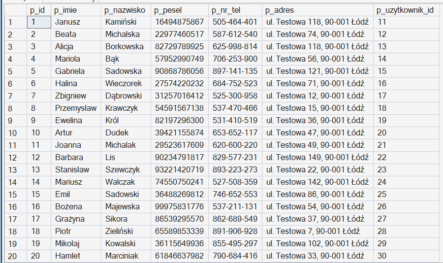
Kolejność uruchamiania skryptów
Aby poprawnie zainicjalizować strukturę bazy danych Szpital i uniknąć błędów związanych z brakiem wymaganych obiektów (np. próbą wstawienia danych do nieistniejącej tabeli), skrypty należy uruchamiać w następującej kolejności:
tworzenie_tabel.sql– utworzenie schematu bazy danych, definicja tabel, kluczy głównych i obcych.dodanie_rekordow.sql– wywołanie procedur generujących dane i zasilenie tabel informacjami testowymi.funkcja_skalarna.sql– utworzenie funkcji (fn_LiczbaZakonczonychWizytPacjenta), która będzie potrzebna do działania widoków i procedur.perspektywy.sql– utworzenie widoków dla recepcji i kadr.trigger_logi.sqlorazzaawansowane_triggery.sql– nałożenie triggerów audytowych i walidacyjnych na wypełnione tabele.role.sql– utworzenie ról systemowych i nadanie uprawnień dla użytkowników.
Alternatywnie: Można jednorazowo uruchomić plik szpital_skrypt_inicjalizujacy.sql, który inicjalizuje bazę i wypełnia ją danymi.
Zapytania, procedury i funkcje
Zapytania DQL - raporty i agregacje
Plik: raport.sql
Plik: grupowanie_danych.sql
Plik: okna_danych.sql
W projekcie wykorzystane zostały następujące mechanizmy generowania raportów i agregacji:
- Eksport do XML / JSON: Zapytania z klauzulami
FOR XML AUTO, ELEMENTSorazFOR JSON PATH, generujące gotową historię wizyt pacjentów do formatów wymiany danych z systemami zewnętrznymi. - Agregacje i grupowanie: Raport dotyczący analizy obłożenia placówki w czasie, który za pomocą funkcji
YEAR()iMONTH()oraz instrukcjiCASEzlicza zakończone wizyty w podziale na poszczególne miesiące. - Funkcje okna: Zastosowane zostały zaawansowane funkcje analityczne:
RANK() OVERdo tworzenia rankingu wizyt danego pacjenta orazLAG()wraz zDATEDIFF()do wyliczania liczby dni, jaka upłynęła od poprzedniej wizyty pacjenta w placówce.
Procedury składowane i funkcje
Plik: dodanie_rekordow.sql
Plik: funkcja_skalarna.sql
W projekcie Szpital wykorzystane zostały procedury składowane (GenerujPacjentow, GenerujPracownikow, UzupełnijKontaPracownikow) i funkcja skalarna:
- Procedura GenerujPacjentow: Jej celem jest zautomatyzowane generowanie testowych danych pacjentów (mock data). Skrypt losuje płeć, dobiera odpowiednie imię i nazwisko ze słownika oraz generuje unikalny PESEL i numer telefonu. Parametry wejściowe:
@ile (INT)– określona przez użytkownika liczba rekordów do wygenerowania. Wynikiem działania jest wstawienie podanej liczby nowych wierszy bezpośrednio do tabeliPACJENT. Przykład użycia:EXEC dbo.GenerujPacjentow 20; - Procedura UzupełnijKontaPracownikow: Jej celem jest generowanie poświadczeń logowania dla personelu. Skrypt iteruje po pracownikach wyższego szczebla za pomocą kursora, tworzy dla nich loginy i bezpiecznie szyfruje domyślne hasła przy użyciu algorytmu SHA-256. Nie posiada danych wejściowych, pobiera dane dynamicznie z bazy. Wynikiem jej działania jest wstawienie nowych rekordów do tabeli
UZYTKOWNIKoraz zaktualizowanie kluczy obcychpr_uzytkownik_idw tabeliPRACOWNIK. Przykład użycia:EXEC dbo.UzupełnijKontaPracownikow; - Funkcja skalarna:
fn_LiczbaZakonczonychWizytPacjenta- zlicza ilość zrealizowanych wizyt przez pacjentów. Parametry wejściowe:@PacjentID (INT)– unikalny identyfikator pacjenta. Wynik działania: Wartość liczbowa całkowita(INT)określająca liczbę wizyt.
Transakcje
Plik: transakcje.sql
Plik: transakacja_obsluga_bledow.sql
Aby zapewnić integralność danych i odporność systemu na awarie, w bazie zaimplementowano transakcje oraz bloki strukturalnej obsługi błędów (TRY...CATCH). Chronią one bazę przed wprowadzaniem częściowych lub uszkodzonych informacji.
- Transakcja z punktami zapisu: Zastosowano mechanizm
SAVE TRANpodczas jednoczesnego dodawania nowego oddziału (ODDZIAL) oraz powiązanych z nim sal szpitalnych z tabeliSALA. W przypadku wystąpienia błędu na etapie przypisywania sali (np. zły numer, błąd naruszenia klucza), system wycofuje się tylko do punktu zapisu. Dzięki temu oddział zostaje poprawnie zapisany w bazie, a wycofywana jest wyłącznie błędna sala. Zapobiega to całkowitemu przerwaniu długich procesów wprowadzania danych. - Bezpieczne przechwytywanie wyjątków i logowanie awarii: Baza posiada transakcję wstawiającą nową wizytę lekarską, zabezpieczoną blokiem
TRY...CATCH. Skrypt celowo symuluje błąd biznesowy (próba przypisania wizyty do nieistniejącego pacjenta o ID 99999, co narusza klucz obcy). Zamiast wyświetlać użytkownikowi komunikat błędu, system płynnie przechodzi do sekcjiCATCH, sprawdza stan uszkodzenia transakcji za pomocą funkcjiXACT_STATE(), wykonuje bezpiecznyROLLBACK, a na końcu zapisuje szczegóły problemu (datę oraz treść systemowego komunikatu zERROR_MESSAGE()) do dedykowanej tabeli technicznej Bledy. - Transakcja powiązana: Zaimplementowano skrypt realizujący proces zapisu nowej wizyty i przypisania do niej diagnozy w ramach jednego bloku
BEGIN TRANSACTION. Skrypt ten testuje zachowanie bazy w przypadku naruszenia więzów spójności np. wstawienie diagnozy z kodem choroby 99999, który nie istnieje w słownikuCHOROBA. System działa zgodnie z zasadą "wszystko albo nic" (atomowość). Gdy wstawienie diagnozy kończy się błędem, skrypt płynnie przechodzi do blokuCATCH. Tam, po upewnieniu się, że transakcja jest nadal otwarta (za pomocą zmiennej systemowej@@TRANCOUNT > 0), następuje jej całkowite wycofanie (ROLLBACK). Oznacza to, że z bazy usuwana jest również sama wizyta (mimo że jejINSERTwykonał się poprawnie), co chroni system przed powstawaniem "pustych", osieroconych rekordów. Dodatkowo skrypt posiada również obsługę wyjątków.
Mechanizmy bezpieczeństwa i administracji
Widoki
Plik: perspektywy.sql
W bazie Szpital zaimplementowano widoki systemowe (views). Pełnią one rolę wirtualnych tabel, które filtrują i łączą informacje z wielu miejsc, ukrywając jednocześnie dane wrażliwe.
- Perspektywa Recepcji (
vw_Recepcja_Wizyty):
Jej celem jest usprawnienie pracy personelu na recepcji szpitala oraz ochrona danych medycznych pacjenta. Widok łączy tabeleWIZYTA,PACJENT,PRACOWNIKorazSALA. Wyświetla wyłącznie dane organizacyjne (imię i nazwisko pacjenta, PESEL, przydzielonego lekarza, numer sali oraz datę i status wizyty). Cechą kluczową tego widoku jest całkowite odcięcie pracownika recepcji od tabel medycznych – recepcjonista nie ma możliwości wglądu w diagnozy, schorzenia, wystawione recepty czy skierowania pacjenta. - Perspektywa Kadr (
vw_Kadry_Zatrudnienie):
Jej celem jest złączenie danych pracowniczych dla działu HR z jednoczesnym ukryciem mechanizmów autoryzacji. Widok zestawia informacje z tabelPRACOWNIK,STANOWISKOiODDZIAL. Dodatkowo, w locie wykorzystuje funkcję skalarnąfn_ObliczStazPracy, aby na bieżąco prezentować aktualny staż pracy każdego pracownika w latach. Zestawienie prezentuje stanowiska i pensje, ale celowo omija kolumny powiązane z tabeląUZYTKOWNIK. Dzięki temu dział kadr ma pełen obraz zatrudnienia, ale nie ma dostępu do loginów systemowych, ról ani zahaszowanych haseł personelu.
Role i uprawnienia
Plik: role.sql
Baza danych posiada trzy role systemowe:
- Rola_Admin: Przeznaczona dla personelu zarządzającego (dyrekcja, dział IT, kadry, recepcja). Posiada uprawnienia operacyjne (tworzenie kont
UZYTKOWNIK, aktualizacja danych w tabeliPRACOWNIKiPACJENT), a także dostęp do widoków kadrowych i recepcyjnych. Rolę tę pozbawiono możliwości bezpośredniej modyfikacji danych medycznych (DENY INSERT, UPDATE, DELETEna tabelachDIAGNOZAczyRECEPTA). - Rola_Lekarz: Profil o charakterze medycznym. Daje pracownikowi pełen dostęp operacyjny do tabel związanych z historią leczenia pacjenta (
WIZYTA,DIAGNOZA,RECEPTA,SKIEROWANIE). Jednocześnie rola ta ma zablokowany dostęp do edycji danych kadrowych i zarządzania kontami innych użytkowników. - Rola_Pacjent: Profil przeznaczony tylko do odczytu. Pozwala na tworzenie zapytań do bazy danych w celu wyświetlenia historii własnych wizyt, e-recept i e-skierowań. Za pomocą polecenia
DENYcałkowicie zablokowano pacjentom możliwość wykonywania operacjiINSERT,UPDATEorazDELETEna jakichkolwiek tabelach.
Triggery
Plik: trigger_logi.sql
Plik: zaawansowane_triggery.sql
Baza zawiera następujące triggery:
- Śledzenie zmian w harmonogramie - sprawdzanie modyfikacji wizyt: Zaimplementowano triger
trg_WizytaUpdateLogdziałający w trybieAFTER UPDATEna tabeliWIZYTA. Pełni on funkcję automatycznego dziennika zdarzeń (logu). Skrypt wykorzystuje wirtualne tabeleinserted(nowe dane) orazdeleted(stare dane), łącząc je i precyzyjnie porównując. Jeśli system wykryje, że zmianie uległy kluczowe informacje – takie jak status wizyty lub jej termin (w_data_godzina) – wyzwalacz w tle zapisuje historyczne i zaktualizowane wartości do dedykowanej tabeliWIZYTY_LOGI.
Triggery obejmujące śledzenie historii:
trg_StanowiskaPensjaAudit: Monitoruje zmiany w tabeliSTANOWISKO. Używając funkcjiUPDATE(st_pensja), sprawdza, czy modyfikacja dotyczyła wynagrodzenia, a następnie zapisuje do tabeliPensjaAuditkwotę przed i po zmianie, aby zapobiec cichym, nieautoryzowanym podwyżkom.trg_PacjentColumnsAudit: Rejestruje modyfikacje danych osobowych w tabeliPACJENT.
Triggery odpowiadające za blokowanie błędnych danych: Działają jako INSTEAD OF INSERT, przejmują operację wstawiania i najpierw sprawdzają dane.
trg_WizytyValidation: Wyświetla błąd, jeśli ktoś próbuje zaplanować wizytę w czasie, który już minął - podanie daty z przeszłości.trg_StanowiskaInsertValidation: Uniemożliwia próby zdefiniowania ujemnej pensji.trg_ReceptyComplexControl: Trigger sprawdzający e-recepty. Odstępuje od dodania recepty, jeśli brakuje na niej wypisanych leków, data jest z przyszłości lub wskazana diagnoza nie istnieje.
Logika biznesowa:
trg_BlockWizytaPatientChange: Trigger chroni spójność historii medycznej. Pokazuje wyjątek, jeśli ktoś chce podmienić przypisanego pacjenta (w_pacjent_id) w istniejącej i zakończonej już wizycie.trg_StanowiskaPensjaCorrection: Zabezpiecza bazę przed nieskończoną pętlą za pomocąTRIGGER_NESTLEVEL(). Automatycznie koryguje i wyrównuje wstawianą pensję do pułapu najniższej krajowej (4300 zł), jeśli wpisano kwotę niższą.
Trigger serwerowy:
trg_DDL_Klinika_Audit: Założony na poziomie całej bazy danych. Używając funkcjiEVENTDATA(), przechwytuje zapytania tworzące nowe tabele i zapisuje ich strukturę oraz dokładny kod T-SQL do specjalnego logu XML. Jest narzędziem dla administratora.